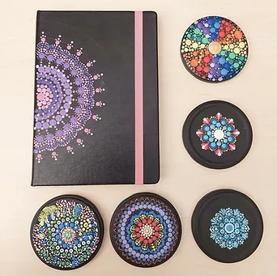

February 2022
Research and mapping of needs and services in the local community was carried out, which we will monitor and repeat every three months. Needs have been identified, as well as opportunities to solve them through the voluntary contribution of citizens. POKAZ organizes a reading club and theater meetings online and live, and Vestigium prepares a program of repurposing textiles, dotting meditation, dance workshops, cooking, socializing and repairs.
